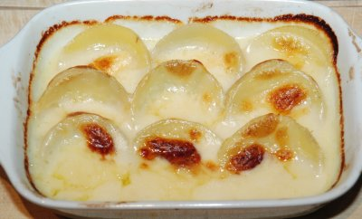

| Zutaten: | ||
| 1 Pers | 2 Pers | |
| 3 Dosen | 1 Dose | Artischockenherzen Abtropfgewicht 240g |
| 3 dl | 1 dl | Einlegeflüssigkeit |
| 40 g | 10 g/1 EL | Butter |
| 40 g | 10 g/1 EL | Mehl |
| 1 dl | keine | Bouillon |
| 2 dl | 1/2 dl | Rahm |
| Muskat | ||
| Salz | ||
| Thymianpulver | ||
| 50 g | 20 g | Greyerzerkäse, gerieben |
| Butterflocken | ||
Bouillon zubereiten. Die Gratinform bebuttern. Die Dose öffnen und die Artischockenherzen sorgfältig abschütten. Gut abtropfen lassen. Die Einlegeflüssigkeit beiseite stellen. Die Artischockenherzen in die bebutterte Gratinform legen, so dass sie dicht nebeneinander stehen.
Für die Sauce die Butter erhitzen, das Mehl darin anschwitzen. Bouillon und Artischockenwasser mischen. Die Pfanne beiseite ziehen und mit dem Artischockenwasser ablöschen. Gut umrühren, aufkochen und mit Rahm verfeinern. Nachwürzen, zwei Drittel vom Käse unter die Sauce ziehen.
Die Artischockenherzen mit der Sauce überziehen. Den restlichen Käse darüber streuen und mit Butterflocken abschliessen. Auf mittlerer Höhe in den vorgeheizten Backofen schieben und goldgelb überbacken (20 Minuten, 220°C).
Herbert Eigenmann, Code: ARG
Getestet 14.5.95 von RE. Ganz hervorragend!
Für das Bild bekam ich keine Herzen, bloss Böden. War auch gut.
@LINKBACK_TAG@ @WAKELOCK@